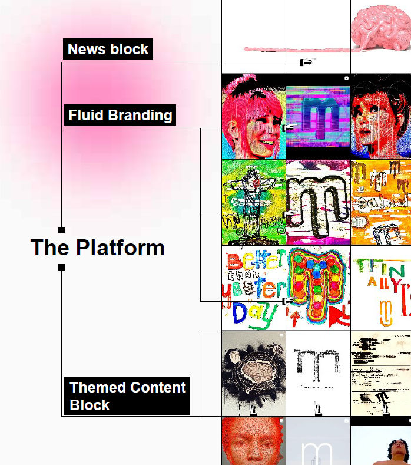

Artwork
places I'm building
brands
the doorway: identity, direction and presence for businesses
systems other people can build on
things I make to find out
Got something that needs to be seen? Or something here caught your eye?
I build brands people want to be part of.
Matheus Camilleri. Multimedia designer and developer, Humber Polytechnic grad. I work across brand identity, creative direction, web, video and AI-assisted production, taking ideas from concept to finished thing. Below that is everything I build when nobody's asking: worlds, platforms, art. Poke around.
places I'm building
the doorway: identity, direction and presence for businesses
systems other people can build on
things I make to find out
Got something that needs to be seen? Or something here caught your eye?
Client work
Turning a word-of-mouth family stone fabricator into a boutique that a younger audience can find, and wants to be part of.
The client journey
The client journey in five steps: choose the stone with guidance, design the piece together, have it crafted by hand, live with it at home, and stay connected to Emporium afterwards.
Emporium is a family business that has been cutting stone for a long time, in Woodbridge, my hometown. Its work came almost entirely from word of mouth and referrals.
They wanted two things: to be seen as a boutique, not a fabricator, and to reach a younger audience through social media and the internet, where they barely existed.
I found the job as a junior designer posting on Humber's student job board. It turned into strategy.
A fabricator sells a slab. A boutique sells an experience. Emporium's craftsmanship was already there; nothing about how they presented themselves said so, and nothing online gave a younger client a reason to choose them.
The most valuable thing I made was a customer journey map, which became the Client Experience Guide. It walks a new client through working with Emporium: choosing their stone, being part of the design process, and ending up with a piece of artisan craftsmanship in their home.
The point was that you don't buy a countertop from Emporium. You join a boutique: an experience, and a relationship that lasts past the install.
It was paid work, and I delivered it. It never launched: our working relationship ended, and they didn't go on to use the materials. So there are no results to report. What's here is the strategy and the creative, and the thinking I'd bring to the next business that wants to be more than its product.
Academic co-op
A real home, rebuilt in VR for someone living with dementia, with an AI version of her grandson waiting inside to talk.


How the pieces fit
Gaussian-splat scans of the home, a MetaHuman of Jonathan, Convai conversation primed with his grandmother's memories and an ElevenLabs clone of his voice all come together in Unreal Engine, packaged as an app for a Meta Quest headset where you walk the house and talk to him.
While I was looking for a co-op at Humber, Jonathan Parker, a professor visiting from Wales, was in town with his students, researching AI and Gaussian Splatting. I went up and talked to him. He had an idea he wanted to build: an experience for people living with dementia, starting with his own grandmother.
It ended up being the two of us. Jonathan brought the research and the scans. I built it.
You put it on and you're standing in her house, an almost exact copy of the scan. Walk through it and you find Jonathan. Say anything out loud, through the headset's microphone, and he answers you in his own voice, about his hometown and his grandmother's house, as if he were really there.
The point was never the technology. It was to hand someone a familiar place and a familiar face, and let the memories come back on their own.
Not the AI, and not the scans. Getting all of it into one file a Meta Quest would actually run. Gaussian splats, a MetaHuman, live conversation and voice are heavy on their own, and together they kept breaking the build. It took weeks of troubleshooting before it finally ran on the headset.
Jonathan thought it was brilliant, and it's one of the things I'm proudest of. My regret is that I kept it quiet. I didn't publish it, share the process or put the workflow out into the world, and I think it was genuinely new.
We talked about turning the workflow into more experiences like this one, for more people and more places. I'd work with him again in a heartbeat. This page is me finally showing it.
My longest-running venture
A media world for undiscovered artists, built from issues, editions and formats that repeat.


One year of Mangosalad
Each month has a theme and one featured artist, who gets a three-post-wide release covering their art, mission, process and inspiration. Twelve months of that become the yearly magazine.
Mangosalad is my oldest project. It began as an Instagram identity where I posted my digital art and animations, and grew into something I wanted the world to be part of.
This was my first real innovation. I didn't design single posts; I designed the whole Instagram page. Work came out in three-post-wide releases, so every drop landed as a full row across the grid.
Designing systems instead of single pieces got me hooked on editions, issues and releases, and it's where my interest in network-style studio broadcasting started.
A magazine isn't a book. It has sections and formats that repeat, and that's what I fell for. Mangosalad is less a page than a world, or a small universe, with its own rhythm.
On pause. It hasn't found its audience yet, but I think it's one of my best ideas and it will have its day. The next move is working out where it's genuinely useful to people, and getting them on board.
A concept, and a real market stall
A business built around growing things: teaching, mushroom kits and permaculture backyards. The mushrooms were real.


How the parts feed each other
Education brings people in. Products let them start growing at home. Services design their whole backyard, and every finished garden becomes something to teach from.
I got into permaculture and growing mushrooms. Good Dirt Co. was the idea of turning that into a business, and not just one product: a small ecosystem of teaching, products and services that feed each other.
I grew mushrooms and sold them at the farmers' market in Woodbridge. That's when it felt worth it: people stopped, asked questions, and left their contact details because they were interested in what I was doing.
Most of my projects live on a screen. This one touched the real world: soil, a stall, and people buying something I grew. I'm proud of that.
Sandbox: a little rough and a little childish, on purpose. It reminds me of a lemonade stand, and of the community I had as a kid.
My interest faded and it's on pause. I still think it's valuable. Knowing how to connect with the earth is realer than any internet venture, and it's a skill I'm glad to have.
My own world, in progress
My dream series: an animated island show, and a live online world where the people who join it shape what airs.
The MMOTV loop
Players in the live world own things, vote and build relationships. The show features the most influential of them. The audience watches and joins the world, and the native characters keep posting on real social media in between.
Vice Versa is a tropical island where people from every walk of life end up together and their energies mix. There are parties, events, competitions, missions and challenges: everything you'd expect from a TV show like it. The characters are classic archetypes, on purpose.
It's my dream series, plugged into youth culture and music. It started as a recurring dream: floating with friends on an inflatable conversation pit in a marina, surrounded by villas and cliffs, in pure, toylike colors.
The bigger idea is an MMOTV: a massively multiplayer online TV show. Anyone online can move to the island as their own character, own property, vehicles and businesses, and get to know the native characters.
It's meant to be another reality that all of us can interact with.
Sorbet colors, big sunsets, vibrant gradients and primitive shapes. It reads as flat, but it's built in 3D. My biggest influences are Robert Valley's animation and the animated show 6teen.
The Instagram account is a travel agency parody: Visit Vice Versa, the island's official tourism page. The first piece, in progress, is a roadside travel banner that introduces the visual style. From there the lore gets teased out image by image, like ads for a place you can't visit yet.
A concept, in progress. The lore and characters live in my archive, and I'm still writing the mechanics. Next milestone: put the visual style out into the world and start teasing the lore on Instagram.
Platform, in progress
Pitch any idea. Anyone online can help make it, and every contribution, however small, is rewarded and recognized.
The three rails
Rail one is reputation tokens: earned, not bought, and they give you a say in decisions. Rail two is a utility token for proposing and taking part. Rail three is per-project revenue shares: tradeable, money only, no creative control.
Anyone can pitch something they want to create. Anyone on the internet can join in and help make it. Every contribution, however small, is rewarded and recognized, and when the work is finished, everyone who helped is linked to it permanently on the blockchain.
One of the biggest problems in my career has been not having a community, and not having my ideas seen. That limits what a person can make. Artprojects gets ideas in front of people, and gets people behind ideas.
Contribution over capital. Reputation over wealth. Creators keep control of what they make.
The design so far uses three rails, to keep creative decisions separate from money: reputation that's earned and can't be bought, a utility token for proposing and taking part, and per-project revenue shares that carry financial upside without creative control.
It's meant to be the infrastructure my other projects are built on. Visit Vice Versa could be made on it, and Mangosalad projects could be creative-directed through it. Eventually, it becomes a DAO, run by the people who use it.
Just me and a written vision, and I'm still learning about decentralized governance and blockchain. I'll know it works the day one project is launched on it and finished, with every contributor credited to it for good.
Just mine
Ink only, since 2018. Dark worlds trying to evolve, with a glimmer of hope if you look hard enough. Made as Khaleb Herrington.
Khaleb Herrington is a separate identity from mjc, and from me. Where the name comes from stays a mystery.
I started painting in 2018, using only ink, and that's still my style. Most pieces are environments or landscapes with little beings living in them: a world trying to evolve. It looks dark. But there's always a glimmer of hope in there, if you look hard enough.
Moving pictures
Art videos, music videos and VFX: the idea, the shoot, the edit and the effects, start to finish.
A lot of my videos are cut to songs by Nettspend. His music puts me in a feeling and makes me daydream; there's a lot of emotion in it. He'll always be one of my favourite artists.
One person, idea to final cut. I come up with the concept, shoot it, cut it, build the effects and finish it. If a shoot needs more hands, I bring in people I trust and we agree on that up front.
Artwork

Artwork
Artwork

Artwork

Artwork

Artwork

Artwork
Artwork

Artwork
Artwork
Artwork

Artwork

Artwork

Artwork

Artwork

Artwork